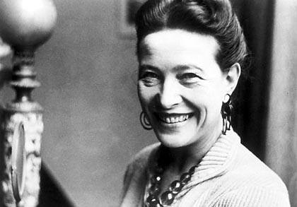

Simone de Beauvoir
"Nu te naşti, ci devii femeie. Niciun destin biologic, psihic, economic nu defineşte înfăţişarea pe care şi-o asumă în mijlocul societăţii femela speciei umane; ansamblul civilizaţiei elaborează acest produs intermediar între mascul şi castrat care este îndeobşte calificat drept feminin."
Simone de Beauvoir a marcat secolul XX prin luările de poziţie îndrăzneţ feministe pentru epoca ei, dar, în mod paradoxal, numele şi viaţa sa rămân greu de despărţit de cele ale partenerului nărăvaş, Jean-Paul Sartre. Simone de Beauvoir se naşte în 1908, la Paris, într-o familie burgheză scăpătată. Tatăl, avocat, are mai puţin succes la tribunal decât la femei, la artiştii teatrali şi la jucătorii de bridge. Georges de Beauvoir e unul dintre acei bădărani misogini din care epoca respectivă a cunoscut o mulţime, îşi bate joc de nevastă-sa cu orice ocazie, iar cuplul se separă „până când moartea îi desparte” (în cazul lui Georges, în 1941). Simone şi sora ei, cu doi ani mai mică, Hélene, sunt instruite, după voinţa mamei, la şcoala Désir, o instituţie onorabilă menţinută de cîteva domnisoare bătrâne, zaharisite de bigotism.
Simone de Beauvoir a obţinut un succes răsunător cu Sângele celorlalţi, în 1945, dar abia în Al doilea sex, apărut în 1949, carte de căpătâi a feminismului, de o mie de pagini, care provoacă opinii diverse în opinia publică, lansează dezbaterea în rândul intelectualilor şi al mass-media. Descrie aici oprimarea masculină, descifrabilă atât în inegalităţile inevitabile din lumea muncii, unde femeile sunt supuse discriminărilor, hărţuielilor, concedierilor abuzive din cauza faptului că rămân însărcinate, cât şi în sfera intimă, unde sunt victimele violenţelor fizice şi morale, reduse la tăcere şi ţinute în ignoranţă, lăsate gravide împotriva voinţei lor, menţinute în limitele activităţilor domestice sau ale distracţiilor din timpul liber. Departe de a-i acuza pe bărbaţi pentru această soartă tristă, Simone de Beauvoir le invită pe femei „să-şi ia destinul în mâini“, să manifesteze, să lupte.
